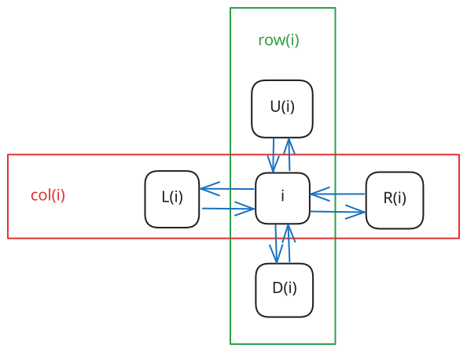
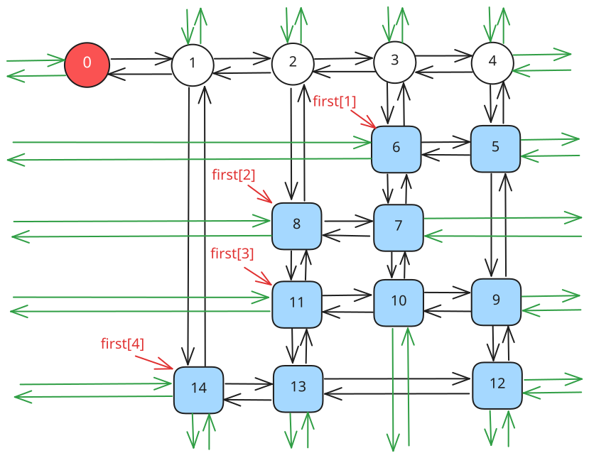
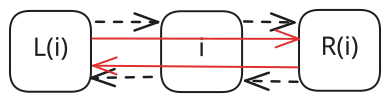
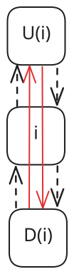
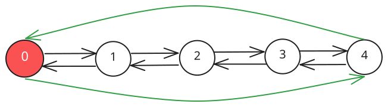
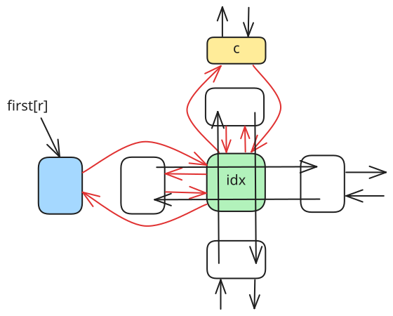

Dlx
本页面将介绍精确覆盖问题、重复覆盖问题，解决这两个问题的算法「X 算法」，以及用来优化 X 算法的双向十字链表 Dancing Link．本页也将介绍如何在建模的配合下使用 DLX 解决一些搜索题．
精确覆盖问题
定义
精确覆盖问题（英文：Exact Cover Problem）是指给定许多集合 $S_i (1 \le i \le n)$ 以及一个集合 $X$，求满足以下条件的无序多元组 $(T_1, T_2, \cdots , T_m)$：
- $\forall i, j \in [1, m],T_i\bigcap T_j = \varnothing (i \neq j)$
- $X = \bigcup\limits_{i = 1}^{m}T_i$
- $\forall i \in[1, m], T_i \in {S_1, S_2, \cdots, S_n}$
解释
例如，若给出
$$ \begin{aligned} & S_1 = {5, 9, 17} \ & S_2 = {1, 8, 119} \ & S_3 = {3, 5, 17} \ & S_4 = {1, 8} \ & S_5 = {3, 119} \ & S_6 = {8, 9, 119} \ & X = {1, 3, 5, 8, 9, 17, 119} \end{aligned} $$
则 $(S_1, S_4, S_5)$ 为一组合法解．
问题转化
将 $\bigcup\limits_{i = 1}^{n}S_i$ 中的所有数离散化，可以得到这么一个模型：
给定一个 01 矩阵，你可以选择一些行（row），使得最终每列（column）^note1都恰好有一个 1． 举个例子，我们对上文中的例子进行建模，可以得到这么一个矩阵：
$$ \begin{pmatrix} 0 & 0 & 1 & 0 & 1 & 1 & 0 \ 1 & 0 & 0 & 1 & 0 & 0 & 1 \ 0 & 1 & 1 & 0 & 0 & 1 & 0 \ 1 & 0 & 0 & 1 & 0 & 0 & 0 \ 0 & 1 & 0 & 0 & 0 & 0 & 1 \ 0 & 0 & 0 & 1 & 1 & 0 & 1 \end{pmatrix} $$
其中第 $i$ 行表示着 $S_i$，而这一行的每个数依次表示 $[1 \in S_i],[3 \in S_i],[5 \in S_i],\cdots,[119 \in S_i]$．
实现
暴力 1
一种方法是枚举选择哪些行，最后检查这个方案是否合法．
因为每一行都有选或者不选两种状态，所以枚举行的时间复杂度是 $O(2^n)$ 的；
而每次检查都需要 $O(nm)$ 的时间复杂度．所以总的复杂度是 $O(nm\cdot2^n)$．
??? note "实现"
cpp
int ok = 0;
for (int state = 0; state < 1 << n; ++state) { // 枚举每行是否被选
for (int i = 1; i <= n; ++i)
if ((1 << i - 1) & state)
for (int j = 1; j <= m; ++j) a[i][j] = 1;
int flag = 1;
for (int j = 1; j <= m; ++j)
for (int i = 1, bo = 0; i <= n; ++i)
if (a[i][j]) {
if (bo)
flag = 0;
else
bo = 1;
}
if (!flag)
continue;
else {
ok = 1;
for (int i = 1; i <= n; ++i)
if ((1 << i - 1) & state) printf("%d ", i);
puts("");
}
memset(a, 0, sizeof(a));
}
if (!ok) puts("No solution.");
暴力 2
考虑到 01 矩阵的特殊性质，每一行都可以看做一个 $m$ 位二进制数．
因此原问题转化为
给定 $n$ 个 $m$ 位二进制数，要求选择一些数，使得任意两个数的与都为 0，且所有数的或为 $2^m - 1$．
tmp表示的是截至目前被选中的二进制数的或．
因为每一行都有选或者不选两种状态，所以枚举行的时间复杂度为 $O(2^n)$；
而每次计算 tmp 都需要 $O(n)$ 的时间复杂度．所以总的复杂度为 $O(n\cdot2^n)$．
??? note "实现"
cpp
int ok = 0;
for (int i = 1; i <= n; ++i)
for (int j = m; j >= 1; --j) num[i] = num[i] << 1 | a[i][j];
for (int state = 0; state < 1 << n; ++state) {
int tmp = 0;
bool flag = true;
for (int i = 1; i <= n; ++i)
if ((1 << i - 1) & state) {
if (tmp & num[i]) {
flag = false;
break;
}
tmp |= num[i];
}
if (flag && tmp == (1 << m) - 1) {
ok = 1;
for (int i = 1; i <= n; ++i)
if ((1 << i - 1) & state) printf("%d ", i);
puts("");
}
}
if (!ok) puts("No solution.");
重复覆盖问题
重复覆盖问题与精确覆盖问题类似，但没有对元素相似性的限制．下文介绍的 X 算法 原本针对精确覆盖问题，但经过一些修改和优化（已标注在其中）同样可以高效地解决重复覆盖问题．
X 算法
Donald E. Knuth 提出了 X 算法 (Algorithm X)，其思想与刚才的暴力差不多，但是方便优化．
过程
继续以上文中中提到的例子为载体，得到一个这样的 01 矩阵：
$$ \begin{pmatrix} 0 & 0 & 1 & 0 & 1 & 1 & 0 \ 1 & 0 & 0 & 1 & 0 & 0 & 1 \ 0 & 1 & 1 & 0 & 0 & 1 & 0 \ 1 & 0 & 0 & 1 & 0 & 0 & 0 \ 0 & 1 & 0 & 0 & 0 & 0 & 1 \ 0 & 0 & 0 & 1 & 1 & 0 & 1 \end{pmatrix} $$
-
此时第一行有 $3$ 个 $1$，第二行有 $3$ 个 $1$，第三行有 $3$ 个 $1$，第四行有 $2$ 个 $1$，第五行有 $2$ 个 $1$，第六行有 $3$ 个 $1$．选择第一行，将它删除，并将所有 $1$ 所在的列打上标记；
$$ \begin{pmatrix} \color{Blue}0 & \color{Blue}0 & \color{Blue}1 & \color{Blue}0 & \color{Blue}1 & \color{Blue}1 & \color{Blue}0 \ 1 & 0 & \color{Red}0 & 1 & \color{Red}0 & \color{Red}0 & 1 \ 0 & 1 & \color{Red}1 & 0 & \color{Red}0 & \color{Red}1 & 0 \ 1 & 0 & \color{Red}0 & 1 & \color{Red}0 & \color{Red}0 & 0 \ 0 & 1 & \color{Red}0 & 0 & \color{Red}0 & \color{Red}0 & 1 \ 0 & 0 & \color{Red}0 & 1 & \color{Red}1 & \color{Red}0 & 1 \end{pmatrix} $$
-
选择所有被标记的列，将它们删除，并将这些列中含 $1$ 的行打上标记（重复覆盖问题无需打标记）；
$$ \begin{pmatrix} \color{Blue}0 & \color{Blue}0 & \color{Blue}1 & \color{Blue}0 & \color{Blue}1 & \color{Blue}1 & \color{Blue}0 \ 1 & 0 & \color{Blue}0 & 1 & \color{Blue}0 & \color{Blue}0 & 1 \ \color{Red}0 & \color{Red}1 & \color{Blue}1 & \color{Red}0 & \color{Blue}0 & \color{Blue}1 & \color{Red}0 \ 1 & 0 & \color{Blue}0 & 1 & \color{Blue}0 & \color{Blue}0 & 0 \ 0 & 1 & \color{Blue}0 & 0 & \color{Blue}0 & \color{Blue}0 & 1 \ \color{Red}0 & \color{Red}0 & \color{Blue}0 & \color{Red}1 & \color{Blue}1 & \color{Blue}0 & \color{Red}1 \end{pmatrix} $$
-
选择所有被标记的行，将它们删除；
$$ \begin{pmatrix} \color{Blue}0 & \color{Blue}0 & \color{Blue}1 & \color{Blue}0 & \color{Blue}1 & \color{Blue}1 & \color{Blue}0 \ 1 & 0 & \color{Blue}0 & 1 & \color{Blue}0 & \color{Blue}0 & 1 \ \color{Blue}0 & \color{Blue}1 & \color{Blue}1 & \color{Blue}0 & \color{Blue}0 & \color{Blue}1 & \color{Blue}0 \ 1 & 0 & \color{Blue}0 & 1 & \color{Blue}0 & \color{Blue}0 & 0 \ 0 & 1 & \color{Blue}0 & 0 & \color{Blue}0 & \color{Blue}0 & 1 \ \color{Blue}0 & \color{Blue}0 & \color{Blue}0 & \color{Blue}1 & \color{Blue}1 & \color{Blue}0 & \color{Blue}1 \end{pmatrix} $$
这表示这一行已被选择，且这一行的所有 $1$ 所在的列不能有其他 $1$ 了．
于是得到一个新的小 01 矩阵：
$$ \begin{pmatrix} 1 & 0 & 1 & 1 \ 1 & 0 & 1 & 0 \ 0 & 1 & 0 & 1 \end{pmatrix} $$
-
此时第一行（原来的第二行）有 $3$ 个 $1$，第二行（原来的第四行）有 $2$ 个 $1$，第三行（原来的第五行）有 $2$ 个 $1$．选择第一行（原来的第二行），将它删除，并将所有 $1$ 所在的列打上标记；
$$ \begin{pmatrix} \color{Blue}1 & \color{Blue}0 & \color{Blue}1 & \color{Blue}1 \ \color{Red}1 & 0 & \color{Red}1 & \color{Red}0 \ \color{Red}0 & 1 & \color{Red}0 & \color{Red}1 \end{pmatrix} $$
-
选择所有被标记的列，将它们删除，并将这些列中含 $1$ 的行打上标记；
$$ \begin{pmatrix} \color{Blue}1 & \color{Blue}0 & \color{Blue}1 & \color{Blue}1 \ \color{Blue}1 & \color{Red}0 & \color{Blue}1 & \color{Blue}0 \ \color{Blue}0 & \color{Red}1 & \color{Blue}0 & \color{Blue}1 \end{pmatrix} $$
-
选择所有被标记的行，将它们删除；
$$ \begin{pmatrix} \color{Blue}1 & \color{Blue}0 & \color{Blue}1 & \color{Blue}1 \ \color{Blue}1 & \color{Blue}0 & \color{Blue}1 & \color{Blue}0 \ \color{Blue}0 & \color{Blue}1 & \color{Blue}0 & \color{Blue}1 \end{pmatrix} $$
这样就得到了一个空矩阵．但是上次删除的行
1 0 1 1不是全 $1$ 的，说明选择有误；$$ \begin{pmatrix} \end{pmatrix} $$
-
回溯到步骤 4，考虑选择第二行（原来的第四行），将它删除，并将所有 $1$ 所在的列打上标记；
$$ \begin{pmatrix} \color{Red}1 & 0 & \color{Red}1 & 1 \ \color{Blue}1 & \color{Blue}0 & \color{Blue}1 & \color{Blue}0 \ \color{Red}0 & 1 & \color{Red}0 & 1 \end{pmatrix} $$
-
选择所有被标记的列，将它们删除，并将这些列中含 $1$ 的行打上标记；
$$ \begin{pmatrix} \color{Blue}1 & \color{Red}0 & \color{Blue}1 & \color{Red}1 \ \color{Blue}1 & \color{Blue}0 & \color{Blue}1 & \color{Blue}0 \ \color{Blue}0 & 1 & \color{Blue}0 & 1 \end{pmatrix} $$
-
选择所有被标记的行，将它们删除；
$$ \begin{pmatrix} \color{Blue}1 & \color{Blue}0 & \color{Blue}1 & \color{Blue}1 \ \color{Blue}1 & \color{Blue}0 & \color{Blue}1 & \color{Blue}0 \ \color{Blue}0 & 1 & \color{Blue}0 & 1 \end{pmatrix} $$
于是我们得到了这样的一个矩阵：
$$ \begin{pmatrix} 1 & 1 \end{pmatrix} $$
-
此时第一行（原来的第五行）有 $2$ 个 $1$，将它们全部删除，得到一个空矩阵：
$$ \begin{pmatrix} \end{pmatrix} $$
-
上一次删除的时候，删除的是全 $1$ 的行，因此成功，算法结束．
答案即为被删除的三行：$1, 4, 5$．
强烈建议自己模拟一遍矩阵删除、还原与回溯的过程后，再接着阅读下文．
通过上述步骤，可将 X 算法的流程概括如下：
- 对于现在的矩阵 $M$，选择并标记一行 $r$，将 $r$ 添加至 $S$ 中；
- 如果尝试了所有的 $r$ 却无解，则算法结束，输出无解；
- 标记与 $r$ 相关的行 $r_i$ 和 $c_i$（相关的行和列与 X 算法 中第 2 步定义相同，下同）；
- 删除所有标记的行和列，得到新矩阵 $M'$；
-
如果 $M'$ 为空，且 $r$ 为全 $1$，则算法结束，输出被删除的行组成的集合 $S$；
如果 $M'$ 为空，且 $r$ 不全为 $1$，则恢复与 $r$ 相关的行 $r_i$ 以及列 $c_i$，跳转至步骤 1；
如果 $M'$ 不为空，则跳转至步骤 1．
不难看出，X 算法需要大量的「删除行」、「删除列」和「恢复行」、「恢复列」的操作．
一个朴素的想法是，使用一个二维数组存放矩阵，再用四个数组分别存放每一行与之相邻的行编号，每次删除和恢复仅需更新四个数组中的元素．但由于一般问题的矩阵中 0 的数量远多于 1 的数量，这样做的空间复杂度难以接受．
Donald E. Knuth 想到了用双向十字链表来维护这些操作．
而在双向十字链表上不断跳跃的过程被形象地比喻成「跳跃」，因此被用来优化 X 算法的双向十字链表也被称为「Dancing Links」．
Dancing Links 优化的 X 算法
预编译命令
#define IT(i, A, x) for (i = A[x]; i != x; i = A[i])
定义
双向十字链表中存在四个指针域，分别指向上、下、左、右的元素；且每个元素 $i$ 在整个双向十字链表系中都对应着一个格子，因此还要表示 $i$ 所在的列和所在的行，如图所示：

大型的双向链表则更为复杂：

每一行都有一个行首指示，每一列都有一个列指示．
行首指示为 first[]，列指示是我们新建的 $c + 1$ 个哨兵结点．值得注意的是，行首指示并非是链表中的哨兵结点．它是虚拟的，类似于邻接表中的 first[] 数组，直接指向 这一行中的首元素．
同时，每一列都有一个 siz[] 表示这一列的元素个数．
特殊地，$0$ 号结点无右结点等价于这个 Dancing Links 为空．
constexpr int MS = 1e5 + 5;
int n, m, idx, first[MS], siz[MS];
int L[MS], R[MS], U[MS], D[MS];
int col[MS], row[MS];
过程
remove 操作
remove(c) 表示在 Dancing Links 中删除第 $c$ 列以及与其相关的行和列．
先将 $c$ 删除，此时：
- $c$ 左侧的结点的右结点应为 $c$ 的右结点．
- $c$ 右侧的结点的左结点应为 $c$ 的左结点．
即 L[R[c]] = L[c], R[L[c]] = R[c];．

然后顺着这一列往下走，把走过的每一行都删掉．
如何删掉每一行呢？枚举当前行的指针 $j$，此时：
- $j$ 上方的结点的下结点应为 $j$ 的下结点．
- $j$ 下方的结点的上结点应为 $j$ 的上结点．
注意要修改每一列的元素个数．
即 U[D[j]] = U[j], D[U[j]] = D[j], --siz[col[j]];．

remove 函数的代码实现如下：
???+ note "实现"
cpp
void remove(const int &c) {
int i, j;
L[R[c]] = L[c], R[L[c]] = R[c];
// 顺着这一列从上往下遍历
IT(i, D, c)
// 顺着这一行从左往右遍历
IT(j, R, i)
U[D[j]] = U[j], D[U[j]] = D[j], --siz[col[j]];
}
recover 操作
recover(c) 表示在 Dancing Links 中还原第 $c$ 列以及与其相关的行和列．
recover(c) 即 remove(c) 的逆操作，这里不再赘述．
值得注意的是， recover(c) 的所有操作的顺序与 remove(c) 的操作恰好相反．
recover(c) 的代码实现如下：
???+ note "实现"
cpp
void recover(const int &c) {
int i, j;
IT(i, U, c) IT(j, L, i) U[D[j]] = D[U[j]] = j, ++siz[col[j]];
L[R[c]] = R[L[c]] = c;
}
build 操作
build(r, c) 表示新建一个大小为 $r \times c$，即有 $r$ 行，$c$ 列的 Dancing Links．
新建 $c + 1$ 个结点作为列指示．
第 $i$ 个点的左结点为 $i - 1$，右结点为 $i + 1$，上结点为 $i$，下结点为 $i$．特殊地，$0$ 结点的左结点为 $c$，$c$ 结点的右结点为 $0$．
于是我们得到了一个环状双向链表：

这样就初始化了一个 Dancing Links．
build(r, c) 的代码实现如下：
???+ note "实现"
cpp
void build(const int &r, const int &c) {
n = r, m = c;
for (int i = 0; i <= c; ++i) {
L[i] = i - 1, R[i] = i + 1;
U[i] = D[i] = i;
}
L[0] = c, R[c] = 0, idx = c;
memset(first, 0, sizeof(first));
memset(siz, 0, sizeof(siz));
}
insert 操作
insert(r, c) 表示在第 $r$ 行，第 $c$ 列插入一个结点．
插入操作分为两种情况：
-
如果第 $r$ 行没有元素，那么直接插入一个元素，并使
first[r]指向这个元素．这可以通过
first[r] = L[idx] = R[idx] = idx;来实现． -
如果第 $r$ 行有元素，那么将这个新元素用一种特殊的方式与 $c$ 和 $first(r)$ 连接起来．
设这个新元素为 $idx$，然后：
-
把 $idx$ 插入到 $c$ 的正下方，此时：
- $idx$ 下方的结点为原来 $c$ 的下结点；
- $idx$ 下方的结点（即原来 $c$ 的下结点）的上结点为 $idx$;
- $idx$ 的上结点为 $c$；
- $c$ 的下结点为 $idx$．
注意记录 $idx$ 的所在列和所在行，以及更新这一列的元素个数．
cpp col[++idx] = c, row[idx] = r, ++siz[c]; U[idx] = c, D[idx] = D[c], U[D[c]] = idx, D[c] = idx;强烈建议读者完全掌握这几步的顺序后再继续阅读本文．
-
把 $idx$ 插入到 $first(r)$ 的正右方，此时：
- $idx$ 右侧的结点为原来 $first(r)$ 的右结点；
- 原来 $first(r)$ 右侧的结点的左结点为 $idx$；
- $idx$ 的左结点为 $first(r)$；
- $first(r)$ 的右结点为 $idx$．
cpp L[idx] = first[r], R[idx] = R[first[r]]; L[R[first[r]]] = idx, R[first[r]] = idx;强烈建议读者完全掌握这几步的顺序后再继续阅读本文．
-
insert(r, c) 这个操作可以通过图片来辅助理解：

留心曲线箭头的方向．
insert(r, c) 的代码实现如下：
???+ note "实现"
cpp
void insert(const int &r, const int &c) {
row[++idx] = r, col[idx] = c, ++siz[c];
U[idx] = c, D[idx] = D[c], U[D[c]] = idx, D[c] = idx;
if (!first[r])
first[r] = L[idx] = R[idx] = idx;
else {
L[idx] = first[r], R[idx] = R[first[r]];
L[R[first[r]]] = idx, R[first[r]] = idx;
}
}
dance 操作
dance() 即为递归地删除以及还原各个行列的过程．
- 如果 $0$ 号结点没有右结点，那么矩阵为空，记录答案并返回；
- 选择列元素个数最少的一列，并删掉这一列；
- 遍历这一列所有有 $1$ 的行，枚举它是否被选择；
- 递归调用
dance()，如果可行，则返回；如果不可行，则恢复被选择的行； - 如果无解，则返回．
dance() 的代码实现如下：
???+ note "实现"
cpp
bool dance(int dep) {
int i, j, c = R[0];
if (!R[0]) {
ans = dep;
return true;
}
IT(i, R, 0) if (siz[i] < siz[c]) c = i;
remove(c);
IT(i, D, c) {
stk[dep] = row[i];
IT(j, R, i) remove(col[j]);
if (dance(dep + 1)) return true;
IT(j, L, i) recover(col[j]);
}
recover(c);
return false;
}
其中 stk[] 用来记录答案．
注意我们每次优先选择列元素个数最少的一列进行删除，这样能保证程序具有一定的启发性，使搜索树分支最少．
对于重复覆盖问题，在搜索时可以用估价函数（与 A* 中类似）进行剪枝：若当前最好情况下所选行数超过目前最优解，则可以直接返回．
模板
??? note "模板代码"
cpp
--8<-- "docs/search/code/dlx/dlx_1.cpp"
性质
DLX 递归及回溯的次数与矩阵中 $1$ 的个数有关，与矩阵的 $r, c$ 等参数无关．因此，它的时间复杂度是 指数级 的，理论复杂度大概在 $O(c^n)$ 左右，其中 $c$ 为某个非常接近于 $1$ 的常数，$n$ 为矩阵中 $1$ 的个数．
但实际情况下 DLX 表现良好，一般能解决大部分的问题．
建模
DLX 的难点，不全在于链表的建立，而在于建模．
请确保已经完全掌握 DLX 模板后再继续阅读本文．
我们每拿到一个题，应该考虑行和列所表示的意义：
-
行表示决策，因为每行对应着一个集合，也就对应着选/不选；
-
列表示状态，因为第 $i$ 列对应着某个条件 $P_i$．
对于某一行而言，由于不同的列的值不尽相同，我们 由不同的状态，定义了一个决策．
例题 1 P1784 数独
??? note "解题思路" 先考虑决策是什么．
在这一题中，每一个决策可以用形如 $(r, c, w)$ 的有序三元组表示．
注意到「宫」并不是决策的参数，因为它 **可以被每个确定的 $(r, c)$ 表示**．
因此有 $9 \times 9 \times 9 = 729$ 行．
再考虑状态是什么．
我们思考一下 $(r, c, w)$ 这个决将会造成什么影响．记 $(r, c)$ 所在的宫为 $b$．
1. 第 $r$ 行用了一个 $w$（用 $9 \times 9 = 81$ 列表示）；
2. 第 $c$ 列用了一个 $w$（用 $9 \times 9 = 81$ 列表示）；
3. 第 $b$ 宫用了一个 $w$（用 $9 \times 9 = 81$ 列表示）；
4. $(r, c)$ 中填入了一个数（用 $9 \times 9 = 81$ 列表示）．
因此有 $81 \times 4 = 324$ 列，共 $729 \times 4 = 2916$ 个 $1$．
至此，我们成功地将 $9 \times 9$ 的数独问题转化成了一个 **有 $729$ 行，$324$ 列，共 $2916$ 个 $1$** 的精确覆盖问题．
??? note "参考代码"
cpp
--8<-- "docs/search/code/dlx/dlx_2.cpp"
例题 2 靶形数独
??? note "解题思路" 这一题与 数独 的模型构建 一模一样，主要区别在于答案的更新．
这一题可以开一个权值数组，每次找到一组数独的解时，
每个位置上的数乘上对应的权值计入答案即可．
??? note "参考代码"
cpp
--8<-- "docs/search/code/dlx/dlx_3.cpp"
例题 3 「NOI2005」智慧珠游戏
??? note "解题思路" 定义：题中给我们的智慧珠的形态，称为这个智慧珠的标准形态．
显然，我们可以通过改变两个参数 $d$（表示顺时针旋转 $90^{\circ}$ 的次数）和 $f$（是否水平翻转）来改变这个智慧珠的形态．
仍然，我们先考虑决策是什么．
在这一题中，每一个决策可以用形如 $(v, d, f, i)$ 的有序五元组表示．
表示第 $i$ 个智慧珠的*标准形态*的左上角的位置，序号为 $v$，经过了 $d$ 次顺时针转 $90^{\circ}$．
巧合的是，我们可以令 $f = 1$ 时不水平翻转，$f = -1$ 时水平翻转，从而达到简化代码的目的．
因此有 $55 \times 4 \times 2 \times 12 = 5280$ 行．
需要注意的是，因为一些不合法的填充，如 $(1, 0, 1, 4)$，
所以 **在实际操作中，空的智慧珠棋盘也只需要建出 $2730$ 行．**
再考虑状态是什么．
这一题的状态比较简单．
我们思考一下，$(v, d, f, i)$ 这个决策会造成什么影响．
1. 某些格子被占了（用 $55$ 列表示）；
2. 第 $i$ 个智慧珠被用了（用 $12$ 列表示）．
因此有 $55 + 12 = 67$ 列，共 $5280 \times (5 + 1) = 31680$ 个 $1$．
至此，我们成功地将智慧珠游戏转化成了一个 **有 $5280$ 行，$67$ 列，共 $31680$ 个 $1$** 的精确覆盖问题．
??? note "参考代码"
cpp
--8<-- "docs/search/code/dlx/dlx_4.cpp"